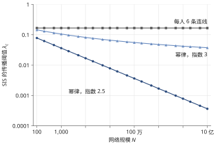

第 7 章 网络与传播阈值
Cohen 与 Frazzini（2008）借助一条会计准则，即 SFAS No. 131，把供应商与它们的主要客户配对；这条准则要求公司写明销售额占比超过 10% 的每一个客户；他们的客户数据从 1980 年到 2004 年（工作论文版的数字）。客户的股票在某个月有一次大的收益时，供应商的价格在当月完成它最终变动的约 60%，其余的 40% 在随后六个月里完成（工作论文版的数字）。他们每个月数一数同时持有两家公司的共同基金有多少，并预期在这个数目高的地方，关联公司的消息会更快进入价格（工作论文版）。在他们的表 IX 里，按客户的收益交易供应商，在同时持有两家的基金较少的地方赚得更多，组间的差别在市值加权组合里在 5% 的水平上显著，在等权组合里不显著（工作论文版的数字）。
Cohen 与 Frazzini 把这个数目当作一个替代指标，用来挑出注意力（attention）的约束更可能起作用的公司，并把结果读作投资者注意力不足的轻重不一（工作论文版）。我们把同一个数目读作一张持有者网络，每一只同时持有两只股票的基金都是一条连线，客户的消息可以沿着它传到供应商的价格，而他们的表分不开这两种读法（本书的判断）。1.6.5 节把这个数目读作看到客户消息的人与给供应商定价的资本之间的重合（本书的判断），第 19 章接着讨论这种读法。1
第 5 章的根模型（root model）让任何人都可能碰到任何人；本章把人放到一张网络上，网络即消息可以沿着传下去的一组连线。除了 Cohen 与 Frazzini 的数据和 7.7 节的网络数据，本章依据的都是背后没有数据的模型。
7.1 均匀混合的两个部分
根模型的口碑（word of mouth）项 建立在均匀混合（homogeneous mixing）之上，它是 5.8 节表 5.1 列出的默认假设（default assumption）之一。1.6.4 节把它分成两个部分。在关于相遇的部分里，任何人都可能碰到任何人，相遇的两个人状态互不相关。在关于来源的部分里，在一个大人群里相遇的两个人没有用过同样的来源。两个部分合起来，就是气体理论所说的分子混沌（molecular chaos）（本书的类比；1.6.4 节）。Karrer 与 Newman（2010）指出，描写仓室之间流动的方程，假定与一个仓室里的每一个成员发生一次能把病传过去的接触，机会都一样，仓室即已经听说的人、还没听说的人这样的人群；这与现实中的接触相去甚远。
他们把接触网络（contact network）当作给定的，让病只在由它的一条连线直接相连的人之间传；对消息来说，它记下谁和谁有联系。一个人的连线数是她的度（degree），有各个连线数的人各占多少比例，合起来就是度分布（degree distribution）。一个人只能维持有限数目的联系人，这就给每个人能有多少条连线定了上限；我们把这算作容量律（capacity law）的又一个前提，容量律即 3.5 节说的一个人单位时间能吸收的信息有上限（本书的判断），7.2 节说明这样的上限对度平均场（degree-based mean field）里 SIS 的阈值有什么作用。
网络本身不产生阈值。在永久传播（permanent spreading）下，知道的人从不停止转告，也从不忘记，传播（propagation）遵循易感-感染模型（susceptible–infected model，简称 SI），即易感-感染-康复模型（susceptible–infected–recovered model，简称 SIR）在没有人康复时的极限；在 SI 里，最后整个人群都染上；在网络上，这要求沿着连线能到达每一个人（本书的判断）。任何阈值都以传播者会停下为前提（1.6.4 节），所以本章的每一个阈值都带着 6.1 节的某一种停止方式。2
7.2 连线数不均的网络
在许多网络上，连线数非常不均。在幂律（power law）里，有 条连线的人所占的比例按 的 次方下降， 是指数。无标度网络（scale-free network）就是度分布有这样一条长尾的网络，连线极多的那少数几个人就是它的超级节点（hub）。Pastor-Satorras 与 Vespignani（2001）引用了对互联网和万维网的研究，这些研究发现了这种形式，指数在 2 与 3 之间；Weng 等（2012）写道，推特的关注者网络有无标度的度分布，正如在社交网络里可以预期的那样。
这类网络常用的方法是度平均场，它把连线数相同的人都当作在统计上相同的。对网络本身，它只保留每个人的连线数，以及相连两人的连线数之间的关联，丢掉谁和谁相连。Pastor-Satorras 等（2015）说，它在静态网络上是一个很强的近似，即简化得很多，在接触的变化比传播快得多时是一个合适的近似。在这种方法里，连线多的人碰到别人更频繁，这就去掉了任何人都可能碰到任何人这一条；在连线数相同的一组人里，它把相遇算作随机的，把相遇双方的状态算作互不相关；因为它把连线当作一直在重新抽取，没有固定的环（loop）把同一个来源带回来，所以关于来源的部分成立（本书的判断）。因此它的方程，每个连线数一个（数学框 7.1），仍然封闭，即这些方程所跟踪的量足以说明这些量自己怎样变化，连线不均只改变它们的形式（本书的判断）。
在易感-感染-易感模型（susceptible–infected–susceptible model，简称 SIS）里，传播者自己停下，之后还可以再次染上这条消息。设传播率 为一个传播者沿一条连线传出感染的速率除以它康复的速率。在度平均场里，在无度关联网络（uncorrelated network）上，即相连两人的连线数互不相关的网络上，只有 超过传播阈值（epidemic threshold），感染才稳定在一个大于零的持久水平上，即地方流行状态（endemic state）；这个阈值是 其中 是平均连线数， 是连线数平方的平均。连线多的人更可能染上，她可以沿任何一条连线染上，染上之后又能沿所有这些连线传出去，所以每个人按她连线数的平方计，少数几个超级节点就让阈值变小（本书的判断）。如果人人的连线数都相同，阈值就是 。设一群十个人里，一个人有 9 条连线，两个人各有 2 条，七个人各有 1 条，那么平均连线数是 2，连线数平方的平均是 9.6，其中那一个超级节点贡献 8.1；照搬式子，会得到约 0.21，十个人都有 2 条连线时是 0.5（本书的计算）。十个人离式子假设的那种大的无度关联网络还差得很远，所以这些数只说明一个超级节点怎样进入式子。
在 SIS 和度平均场下，在一个规模无穷大、度分布是指数大于 2 且不超过 3 的幂律的网络上， 无限增长，阈值趋于零（表 7.1）。Pastor-Satorras 与 Vespignani 在指数为 3 的网络上模拟 SIS，在足够大的网络里没有找到阈值（1.6.4 节）；他们说，他们的平均场（mean field）框架可以推广到大于 2、不超过 3 的指数。
在度分布为幂律的有限网络里，人们常常观察到，最大的连线数，即自然截断（natural cutoff），随规模 按 增长。截断让 保持有限，所以这个阈值保持在零以上（本书的推导；表 7.1）；Pastor-Satorras 等发现，生物、社会和认知上的约束给连线数定了上限时，也是一样。他们还说，人们很快认识到，阈值消失这一点对真实网络并不现实；他们强调，阈值有限不能成为忽视连线不均的理由，因为对 SIS，简单的均匀方法可能把异质网络里的阈值高估一个或更多个量级（order of magnitude）。图 7.1 画出有限网络上的阈值（本书的计算）。3

人人都有 6 条连线时，阈值在每个规模上都是 1/6；指数为 3 的幂律，阈值随规模缓慢下降，指数为 2.5 时下降得快得多（本书的计算；数学框 7.1）。这些结果依赖 SIS、度平均场和无度关联网络，无度关联网络在这里读作连线重新抽取得比传播快得多的网络（本书的判断）；还依赖每人至少 3 条连线，以及带一个我们选定的常数的自然截断（本书的推导）。4
对 SIS，别的方法给出别的答案。个体平均场（individual-based mean field）保留谁和谁相连的整张表，它预测，在最大连线数随规模增长的每一种网络上，阈值都随网络变大而消失（数学框 7.1）。据 Pastor-Satorras 等的转述，Mountford 等的一个严格结果发现，在大的幂律图上，感染消亡之前的时间随规模指数增长，所以在任何传播率下感染都持续存在。
在 SIR 里，传播者康复，此后永远退出。度平均场给出同样的阈值 。在静态的、无度关联的局部树状网络（locally tree-like network）上，环长到从任何一个人往外看附近的网络都像一棵树；在这样的网络上，如果每个传播者都在染上之后经过固定的时间停下，SIR 就可以映射到键渗流（bond percolation），每条连线连通的概率就是感染沿它传过去的概率（数学框 6.2）。按这种映射，在规模无穷大的网络上，指数小于 3 时阈值消失，那时 发散；指数大于 3 时阈值保持有限。
在接触触发的停止（contact-triggered stopping）下，传播者碰到已经知道的人就停下，例如 6.3 节的谣言模型（rumor model），它在均匀混合下没有阈值。在无标度网络上对 Maki–Thompson 模型的模拟里，连线不均降低了最后听说的人所占的比例，仍然没有阈值（据 Pastor-Satorras 等的转述），综述的解释是，超级节点很早听到传言（rumor），随后很快停止传播（stopping spreading）。在小世界网络（small-world network）上，按 Daley 与 Kendall 的规则传播的传言，在随机改接的连线所占的比例低于一个临界值时，可能停在源头附近（Zanette，据 Castellano、Fortunato 与 Loreto 以及 Pastor-Satorras 等的转述；6.3 节）。
传播者还可以按自己的速率遗忘（forgetting）时，据 Pastor-Satorras 等的转述，Nekovee 等发现，谣言模型的表现与 SIR 完全一样，阈值与 成反比，在无标度网络无限变大时消失。本章关于自发停止（spontaneous stopping）的结果，不搬到接触触发的停止上（本书的判断）。5
表 7.1 网络上的阈值，按停止方式与方法列出
| 停止方式；方法 | 网络 | 阈值 | 出处 |
|---|---|---|---|
| SIS 或 SIR；度平均场 | 无度关联 | Pastor-Satorras 等 | |
| SIS；度平均场 | 无度关联，规模无穷大，幂律，指数大于 2 且不超过 3 | 趋于零 | Pastor-Satorras 与 Vespignani |
| SIS；度平均场 | 无度关联，幂律，有限或连线数有上限 | 大于零 | 本书的推导；指数在 2 与 3 之间时，Pastor-Satorras 等 |
| SIS；个体平均场 | 最大连线数随规模增长的任何网络 | 随规模增长而消失 | Pastor-Satorras 等 |
| SIS；严格证明 | 大的幂律图 | 没有阈值；感染在任何速率下都持续 | Mountford 等，据 Pastor-Satorras 等的转述 |
| SIR，到康复的时间固定；映射到键渗流 | 静态，无度关联，局部树状，幂律，规模无穷大 | 指数小于 3 时消失，大于 3 时有限 | Pastor-Satorras 等 |
| 接触触发，Maki–Thompson；模拟，度平均场与之一致 | 无标度 | 没有阈值；听说的人更少 | 据 Pastor-Satorras 等的转述 |
| 接触触发，Daley–Kendall；方法没写 | 小世界 | 改接连线的比例低于一个临界值时停在源头附近 | Zanette，据 Castellano、Fortunato 与 Loreto 以及 Pastor-Satorras 等的转述 |
| 接触触发，带遗忘；方法没写 | 无标度 | 与 成反比；随规模增长而消失 | Nekovee 等，据 Pastor-Satorras 等的转述 |
对 SIS 和 SIR，表 7.1 的每一行给出的阈值，都不高于同一方法下人人都有平均连线数的网络的阈值，或者根本没有阈值；阈值是否到零，取决于方法、网络的规模和连线有多不均（本书的推导；数学框 7.1）。没有哪一行对照过市场上消息怎样传播的数据（7.7 节）。
7.3 环与聚类
一个人的两个熟人如果互相认识，可能是从同一个来源听到消息的，所以从两人那里都听到，并不等于从两个来源听到（本书的判断）。聚类（clustering）是一个人的熟人之间也互相认识的程度，环是从一个人出发、经过别人、又回到她的一条路。在有环的固定网络上，相遇沿着固定的连线发生，这去掉了均匀混合关于相遇的部分；共享的来源也去掉了关于来源的部分；这时一个人的各个邻居的状态相互关联，按每个人自己的概率写的方程，只有把邻居当作相互独立才能封闭，而那只是近似（本书的判断）。
Karrer 与 Newman（2010）研究的 SIR，传病的时间和康复的时间可以服从任意的分布，传播发生在一张给定的接触网络上。一开始，每个人以一定的概率染上，各人之间相互独立，所以单个种子的情形在他们的结果之外（本书的判断）。他们沿每条连线传一个消息，即连线一端的邻居到某个时刻还没有把病传给另一端那个人的概率。这种消息传递（message passing）在树上，以及在大的随机图这类局部树状网络上是精确的。配置模型（configuration model）是这样得到的随机网络，先给每个人定好连线数，再把连线随机接起来；在配置模型里，最短的环随网络变大而变长，所以在大网络里，一个人沿不同连线收到的消息变得相互独立，他们写道，这本质上是假定沿长度不断增长的环的关联无关紧要；在这种网络里，固定的连线去掉了均匀混合关于相遇的部分，相互独立的消息保留了关于来源的部分（本书的判断）。在有环的网络上，这个计算可能把同一个人算两次，经两个邻居各算一次；Karrer 与 Newman 证明，这时它给出染上的人数的一个严格的上界。所以在他们的设定里，把一个人的各个邻居当作独立来源的计数，在来源重叠的地方只会高估 SIR 传播能到多远（本书的判断）；本书没有一个量能说明这个上界离真实的人数有多近。数学框 7.2 用符号写出这个计算。
Pastor-Satorras 等对 SIR 到键渗流的映射也这样说，它只对树精确，在局部树状的随机网络上成立，环和多条路径可能让它失效，短的环会导致不同的结论。
关于聚类的两个结果指向相反的方向。对 SIR，Keeling 用一个简单的平均场近似，这种近似原则上只对连线均匀的网络成立，他发现爆发随聚类增强而缩小（据 Pastor-Satorras 等的转述）。对 SIS，在个体平均场里，Pastor-Satorras 等指出，用网络里三角形的数目表示的界表明，阈值随聚类增强而下降。两者在传播者怎样停下、方法和所量的东西上都不同，所以本章不从它们得出聚类把传播往哪个方向推的一般规律（本书的判断）。
这个上界属于 SIR。Karrer 与 Newman 还没有为 SIS 找到类似的消息传递解，所以本章不把这个上界搬到 SIS 上（本书的判断）。
Kenah 与 Robins（2007）考虑 Newman 研究过的 SIR，证明以平均传播概率为连通概率的键渗流给对了阈值和终态规模（final size），即一次大爆发里染上的人所占的比例；传播期（infectious period）因人而异时，它预测不对起飞概率（takeoff probability），即一个种子引起一次大爆发的机会（数学框 6.2；第 8 章）。6
7.4 方向、权重与分群
在推特上，用户可以关注有趣的人，关注关系由此形成一张有向的社交网络，有向网络（directed network）即连线只朝一个方向的网络。模因（meme）即用户转发的一段内容，例如一个话题标签；在 Weng 等的模因模型里，从一个用户到一个关注者的连线，表示这个用户的模因可以在关注者的屏幕上读到。方向去掉了均匀混合关于相遇的部分，因为消息沿一条连线只朝一个方向传；在局部树状网络上，它保留关于来源的部分（本书的判断）。
Weng 等从推特关注者网络里抽出一个有 个用户的有向样本，在这个样本上运行他们的模型；为了研究网络的作用，他们也在一张节点数和边数都相同的随机网络上运行它，两张网络各有约 条边。在随机网络上，模因流行程度、持续时间和用户活跃程度的不均，总的来说大大减小。对流行程度，他们指向关注者网络很宽的度分布，有相当数量的超级节点用户拥有许多关注者，这些用户的模因很可能达到更高的流行程度，随机网络的度分布则很窄。两张网络的差别不止在于连线有多不均（本书的判断），作者自己为他们的模型能说明什么划的界限，见 6.6 节。
接触各不相同时，例如发生的频繁程度不同，加权网络（weighted network）给每条连线一个权重。在 SIS 的个体平均场里，阈值的形式与没有权重时相同，谁和谁相连的那张表里每条连线的那一格换成它的权重（数学框 7.1）。权重去掉关于相遇的部分，因为有的两个人比别的两个人相遇得更频繁；权重不添加环，所以关于来源的部分成立与否，与同一张网络不加权重时一样（本书的判断）。
社区结构（community structure）把网络分成几群，每群内部连线多，群与群之间连线少。在 SI 里，社区结构让感染增长得更慢（Huang 与 Li，据 Pastor-Satorras 等的转述），综述把这读作社区倾向于把一次爆发限制在第一个种子周围。分群去掉了均匀混合的两个部分，因为相遇集中在群内，群里稠密的连线还构成短的环，两个人的来源通过这些环重叠（本书的判断）。7
7.5 三种传播里的超级节点
超级节点在不同的传播里做的事不同（本书的判断）。在传染（contagion）里，Pastor-Satorras 与 Vespignani 关于超级节点消除阈值的结果，只在表 7.1 里它那一行的各项限定之内成立。Pastor-Satorras 等在讲 SI 时转述了 Barthélemy 等的模拟，按这些模拟，在无标度网络上，感染先到超级节点，再从它们出发，经由连线数越来越少的各类节点，很快侵入网络的其余部分；在这类网络上的 Maki–Thompson 谣言模型里，综述则用超级节点很早听到、随后很快停止传播来解释 7.2 节的结果。
在 Watts 的阈值模型（threshold model）里，一个人的邻居里采纳的人至少达到一个门槛比例，她就采纳；这个模型是复杂传染（complex contagion）的一种形式，第 11 章讨论网络对它有什么作用。
在 DeGroot 学习（DeGroot learning）里，人们反复对邻居的意见取加权平均；在 Golub 与 Jackson 的版本里，每个人一开始有一个独立的、带噪声的信号，它的均值是真值，方差有一个大于零的下界，这时社会是明智的（wise），即社会变大时每个人的信念（belief）都收敛到真值，当且仅当最有影响力的那个人的影响力趋于零，而数目有界的一群显赫（prominence）的人，即从每个人那里得到不趋于零的、可能是间接的关注的人，会让学习失败（工作论文版；13.7 节）。
在 Acemoglu 等的贝叶斯式观察学习（observational learning）里，每个人得到一个关于状态的信号，看到随机抽出的一组前人过去的行动，然后在两种行动中选一种，给定状态，人人偏好同一种行动，这是一个完美贝叶斯均衡（perfect Bayesian equilibrium）；渐近学习（asymptotic learning），即选对行动的概率收敛到 1，在某个有限群体有过度影响（excessive influence）时不发生，过度影响即有无穷多个人只看到这个群体的行动，而且这件事的概率有一个一致的大于零的下界；在没有这样的群体、私人信念又无界，即信号所隐含的似然比没有界时，渐近学习发生（工作论文版的数字；14.6 节）。
在度平均场下的 SIS 里，传染看的是 比起 有多大，DeGroot 学习看的是影响力是否集中在少数几个人身上，私人信念无界时的贝叶斯式观察学习看的是是否存在有过度影响的群体（本书的判断）。
Kempe、Kleinberg 与 Tardos 在一个计算实验里比较了选种子的几种办法，在一张真实的网络上，用他们设定的影响参数运行模型，这张网络是 arXiv 高能物理理论分区的合著关系图，有 10748 个节点，约 53000 对节点之间有连线。他们没有从对网络的观察里推断实际的影响参数；他们用的是简单的设定，并用 10000 次模拟估计每一组种子能传到多远。在他们的线性阈值模型（linear threshold model）里，每个人有一道在 0 与 1 之间随机抽出的门槛，邻居里已采纳者的加权比例达到门槛，她就采纳；在这个模型里，贪心算法一次加一个种子，每次加增益最大的那一个，它比挑连线最多的人好约 18%；他们算不出最优的选法。作者指出，许多连线最多的节点可能聚在一起，所以没有必要把它们全都选上；他们的曲线还提示，许多节点在网络里的影响力，没有准确地反映在它们的度或中心性上。这些结果说的是他们的模型在那一张网络上的影响力（本书的判断）；第 15 章讨论种子的选择。
网络还打破了相遇的两个人把各自知道的东西相加的规则。在 Duffie 与 Manso 的信息渗流（information percolation）里，相遇并互相告诉对方自己知道什么的两个人，最后都得到两人信息之和（1.6.1 节和 1.6.4 节；第 19 章），这只在两人的来源不重叠时才对（本书的判断）；在有环的网络上，同一条消息可以沿几条路回来。DeMarzo、Vayanos 与 Zwiebel 把没有考虑到自己收到的信息可能重复叫作说服偏差（persuasion bias）；在他们的模型里，人们如实报告自己的信念，说服偏差让联系广的人有影响力，因为他们的信息重复了许多次（工作论文版；13.2 节）。这种重复来自均匀混合关于来源的部分不成立（本书的判断），第 13 章展开讨论说服偏差。8
7.6 网络与价格
按 5.3 节的价格规则，带着那里的前提，其中有财富相等、对数效用（log utility）和不从价格学习（no learning from prices），并且先不管噪声交易者（noise trader）的需求，价格随知情比例（informed fraction）变动，知情比例即知道的人所占的比例，在网络上，这个比例沿着连线增长。在永久传播下，在每个人都能沿连线到达的地方，最后人人都听说（7.1 节），所以价格最后停在根模型的价格停下的地方，网络改变的是路径（本书的判断）。
在度平均场里、在无度关联网络上，Pastor-Satorras 等从 SI 和 SIR 的方程读出，一次爆发早期增长的时间尺度（time scale）与 成反比，所以在 发散的地方，例如在无标度网络上，感染站稳之前的时间变得很短，在规模无穷大的极限下趋于零。价格规则把每个人只算一次，不管她有多少条连线，所以先到了超级节点的消息（7.5 节），对价格的推动只到知道的人所占比例对应的位置（本书的判断）；这些人是否握有决定价格的资本，是第 19 章的问题。
传播者自己停下时，例如在 SIR 里，传播停在它的终态规模上（7.3 节），在表 7.1 里 SIR 那几行的阈值以下只传到少数几个人，按价格规则，价格停在那个知情比例对应的位置，直到公开披露（public disclosure）或结算（settlement），与 6.5 节一样（本书的判断）。
Cohen 与 Frazzini 每个月按同时持有两家公司的基金数，把股票分成三组，并在每组之内构建按客户收益交易供应商的多空组合；他们用的是季度的基金持仓，并假定两次报告之间持仓不变（工作论文版的数字）。在市值加权组合里，用 1980 年至 2004 年的客户数据，同时持有两家的基金少时，这些多空组合每月赚 3.02%，多时每月赚 0.55%；两者之差的 t 统计量是 −1.98，在 5% 的水平上显著，在等权组合里是 −1.44，不显著（工作论文版的数字）。在网络读法里，这个数目，即两家公司之间的连线数，相当于两者之间一条连线的权重，权重的意思同 7.4 节；本章的模型都没有拟合过基金持仓，按这些模型，连线越重，客户的消息越早传到供应商的价格（本书的判断）。9
7.7 本章引用的实证证据
Cohen 与 Frazzini 的客户数据从 1980 年到 2004 年，他们数同时持有两家公司的基金，用的是 CDA/Spectrum 数据库里的季度共同基金持仓（工作论文版的数字）。Pastor-Satorras 与 Vespignani 引用对互联网和万维网的研究，说明幂律的形式和在 2 与 3 之间的指数（7.2 节）；本书没有读过那些研究。Weng 等的网络是从推特关注者网络里抽出的 个用户的样本，抽样用的是随机游走，偶尔从随机的位置重新开始（7.4 节）；Kempe、Kleinberg 与 Tardos 的网络是 arXiv 一个分区的合著关系图（7.5 节）。两组作者都是在这些真实的网络上，用自己设定的参数运行模型（本书的判断）。本章其余的内容，包括每一个阈值、综述转述的结果、消息传递和它的上界、图 7.1（本书的计算）和三处预告，都是背后没有数据的模型结果，7.6 节对价格的读法也是（本书的判断）。10
7.8 交易者的自查清单
没有一个问题说该买什么、卖什么，答得好也不能让一笔交易变得安全（本书的判断）。
- 传播者怎样停下？ 核对：读任何一个阈值之前，先写下它的传播者怎样停下，以及得出它的方法，像表 7.1 那样。在网络上，谣言模型、SIS 和 SIR 不一定一致，对 SIS，不同的方法互不一致；Pastor-Satorras 与 Vespignani 的阈值只在表 7.1 里它那一行的各项限定之内才消失。
- 来源重叠吗？ 核对：一个紧密的圈子里有几个人说同一件事时，问一问他们是否从同一个来源听来（7.3 节；本书的判断）。对一开始有一部分人染上的 SIR，Karrer 与 Newman 的计算在有环的网络上可能把同一个人算两次，它给出染上人数的一个上界；没有考虑到消息的重复，就是 DeMarzo、Vayanos 与 Zwiebel 所说的说服偏差（工作论文版；第 13 章）。
- 连线最多的账户是最好的种子吗？ 核对：Kempe、Kleinberg 与 Tardos 在一张合著关系网络上做了计算实验，影响参数由他们设定；在他们的线性阈值模型里，贪心算法选的种子比连线最多的人好约 18%，而且许多连线最多的节点可能聚在一起（7.5 节）。问一问第二个大账户能否传到第一个还没传到的人（本书的判断）。
- 共识靠的是少数几个声音吗？ 核对：在 Golub 与 Jackson 的 DeGroot 模型里，信号相互独立，均值是真值，方差有大于零的下界，这时数目有界的一群显赫的人会让学习失败；在 Acemoglu 等的贝叶斯模型里，有两种行动，给定状态时人人偏好同一种行动，邻域随机抽出，私人信念无界，这时只有一个有过度影响的群体才会阻止渐近学习（工作论文版；7.5 节）。两种情形哪一种适用，取决于人们是对意见取平均，还是从行动推断（本书的判断；第 13 章和第 14 章）。
- 什么把两家的价格连在一起？ 可检验：Cohen 与 Frazzini 预期，同时持有两家公司的基金越多，关联公司的消息越快进入价格；在他们 1980 年至 2004 年的数据里，组间的差别只在市值加权组合里在 5% 的水平上显著（工作论文版的数字；7.6 节）。这个差别在 2004 年以后、在等权组合里、扣除交易费用（trading costs）以后是否成立，都可以检验，我们把这个数目读作一张持有者网络（本书的判断）。
7.9 小结
- 均匀混合有一个关于相遇的部分和一个关于来源的部分。度平均场把连线当作一直在重新抽取，在这种方法里，连线不均只去掉任何人都可能碰到任何人这一条，所以方程只在形式上改变；在有环的固定网络上，两个部分都不成立，按每个人自己的概率写的方程不再封闭（本书的判断）。
- 对 SIS，在度平均场里、在无度关联网络上，阈值是 ，少数几个超级节点让它变小；Pastor-Satorras 与 Vespignani 关于它趋于零的结果，只在规模无穷大、度的指数大于 2 且不超过 3 的网络上成立；有限网络的自然截断让它保持在零以上（本书的推导；图 7.1）；对 SIS，别的方法给出别的答案（表 7.1）。
- 在接触触发的停止下，在无标度网络上对 Maki–Thompson 谣言模型的模拟发现，连线不均降低了听说的人所占的比例，仍然没有阈值（据 Pastor-Satorras 等的转述）。
- 对一开始有一部分人染上的 SIR，Karrer 与 Newman 的消息传递在树上和大的局部树状网络上是精确的，在有环的网络上给出染上人数的一个上界；没有考虑到信息的重复，就是说服偏差，在 DeMarzo、Vayanos 与 Zwiebel 的模型里，人们如实报告时，它让联系广的人有影响力（工作论文版；第 13 章）。
- 信号相互独立、均值是真值、方差有大于零的下界时，数目有界的一群显赫的人会让 Golub 与 Jackson 的 DeGroot 学习失败（工作论文版；第 13 章）；每个人有一个信号，看到随机抽出的一组前人过去的行动，有两种行动，给定状态时人人偏好同一种行动，这时在 Acemoglu 等的贝叶斯模型里，一个有过度影响的群体会阻止渐近学习（工作论文版；第 14 章）。
- 在 1980 年至 2004 年的客户数据里，Cohen 与 Frazzini 发现，供应商的价格用几个月吸收关于主要客户的消息，按这些消息交易，在同时持有两家的基金较少的地方赚得更多，这个差别只在市值加权组合里在 5% 的水平上显著（工作论文版的数字）；他们把这个数目读作注意力的替代指标，我们把它读作一张持有者网络，他们的表分不开这两种读法（本书的判断）。
- 除了 Cohen 与 Frazzini 的数据和 7.7 节的网络数据，本章依据的都是背后没有数据的模型。
7.10 写给量化读者的数学框
数学框 7.1 网络上阈值的符号形式
符号。 是有 条连线的人所占的比例，，。在 SIS 里，感染的节点以速率 康复，易感的节点以速率 染上，。Pastor-Satorras 与 Vespignani 写的速率 ，针对的是与一个或更多个感染节点相连的节点；本框照 Pastor-Satorras 等的写法，在他们的版本里，健康的节点从每个感染的邻居那里以这个速率染上， 是他们的传播率。这里的 数的是连线，与 6.3 节碰到已经知道的人的次数 无关； 与数学框 1.2 的相遇速率无关；下面的 是一个传播概率，与第 5 章的截止时刻 无关。
度平均场里的 SIS。 记 为有 条连线的节点处于感染状态的概率，把康复率取为 1，在无度关联网络上有 其中 是随机选一条连线、它通向一个感染节点的概率。只有 时，才存在 的稳态。阈值在五个条件同时成立时趋于零，即 SIS、度平均场、无度关联网络、规模无穷大的网络，以及 的幂律。
有限网络。 用同一种方法，每人至少 3 条、至多 条连线时，对 里的 求和，在 大时得到， 时 ， 时 （本书的推导）。取 ，即图 7.1 的截断，前者像 那样下降，后者像 那样下降（本书的推导）。 为 100、100 万和 10 亿时，图 7.1 的阈值在 时约为 0.145、0.0557 和 0.0375，在 时约为 0.0783、0.00363 和 0.000363（本书的计算）。
SIS 的个体平均场。 这种方法给出 ，其中 是邻接矩阵的最大特征值，邻接矩阵即两人相连处为 1、其余处为 0 的那张表（7.2 节）。
SIR。 在无度关联网络上，度平均场给出同样的 ，连线在 不变的条件下重新抽取得很快时，这是精确的。在相连的人连线数互不相关的静态树状网络上，每个传播者在染上之后经过固定的时间移出时，设 为它在那之前把感染传给一个相连的易感者的概率。映射到键渗流，得到临界值 康复率恒定时，康复所需的时间因传播者而异；把每条连线的概率换成它的平均值 ，得到 这个近似给出精确的阈值、阈值以下的平均爆发规模和阈值以上的终态规模，不过在别的方面不对，例如起飞概率（7.3 节）。
与连线数相同的网络比较。 连线数的方差 从不为负，所以 ，并且在 时 ，两式的右边是人人都有 条连线的网络上的值，只在那里取等号。在邻接矩阵的 Rayleigh 商里，取各个分量都等于 1 的向量，得到 ，所以 （本书的推导）。
本框里本书推导的严格写法与证明将放在附录。11
数学框 7.2 消息传递与环
设定。 Karrer 与 Newman 的 SIR 允许传播的时间和康复的时间服从任意的分布，传播发生在一张给定的接触网络上。一开始，每个人以相互独立的概率 易感，否则就是感染的。消息 是邻居 到时刻 还没有把病传给 的概率。符号 、、 和 是他们的，这里的 与前几章的后验概率（posterior probability） 无关。
晚期。 记 为病在两个相连的人之间传过去的总概率，晚期的消息 满足 其中 是 除 以外的邻居的集合。所以传播的时间和康复的时间只通过 起作用；对 Newman 研究过的 SIR，Kenah 与 Robins（2007）发现了同样的结论（7.3 节）。Karrer 与 Newman 用消息 在树上满足的方程来定义 ，这个方程在任何网络上都有完全确定的意义，不管网络是否为树。晚期，人 仍然易感的机会满足 ，由此得到她终究染上的机会的一个上界，对所有人求和，也得到爆发规模的一个上界。晚期的极限与一种相关的键渗流有关，说它相关，是因为康复快的人传染每个邻居的机会小，康复慢的人机会大一些。
环。 设 为与 的距离不超过 的人数，距离是沿一条路径各次传播之前的延迟之和；设 为其中通往 的路径经由邻居 到达的人数。于是 ，在树上取等号。在有一个环的网络上，这个和把某个人算两次，沿两条路径各算一次；Karrer 与 Newman 由这个不等式推出那个严格的上界。
配置模型。 对配置模型的网络取平均（7.3 节），Karrer 与 Newman 的晚期方程恰好变成配置模型上键渗流的标准方程。
适用范围。 这个计算针对 SIR。Karrer 与 Newman 还没有为 SIS 找到类似的解；他们写道，原则上可以把它推广到有度关联或有聚类的随机图。传播期因人而异时，起飞概率不只取决于平均传播概率（数学框 6.2；第 8 章）。谣言模型的接触触发的停止既在这个设定之外，也在 Kenah 与 Robins 的设定之外，因为传播者是否停下取决于别人是否已经知道（本书的判断）。12
本章文献
本章引用的文献。所读版本不是期刊版的，条目里写明读的是哪个版本；尾注里的页码按所读的版本。
- Acemoglu, D., M. A. Dahleh, I. Lobel and A. Ozdaglar (2011). Bayesian Learning in Social Networks. Review of Economic Studies 78(4): 1201–1236. 所读为 2008 年 5 月的 NBER 工作论文 14040；没有核对期刊版。
- Barthélemy, M., A. Barrat, R. Pastor-Satorras and A. Vespignani (2004). Velocity and Hierarchical Spread of Epidemic Outbreaks in Scale-Free Networks. Physical Review Letters 92: 178701. 没有读；按 Pastor-Satorras 等（2015）的转述介绍。
- Barthélemy, M., A. Barrat, R. Pastor-Satorras and A. Vespignani (2005). Dynamical Patterns of Epidemic Outbreaks in Complex Heterogeneous Networks. Journal of Theoretical Biology 235: 275. 没有读；按 Pastor-Satorras 等（2015）的转述介绍。
- Castellano, C., S. Fortunato and V. Loreto (2009). Statistical Physics of Social Dynamics. Reviews of Modern Physics 81(2): 591–646. 所读为 arXiv 预印本 0710.3256v2；没有核对期刊版。
- Cohen, L., and A. Frazzini (2008). Economic Links and Predictable Returns. Journal of Finance 63(4): 1977–2011. 所读为 2006 年 2 月 23 日的工作稿；没有核对期刊版。
- DeMarzo, P. M., D. Vayanos and J. Zwiebel (2003). Persuasion Bias, Social Influence, and Unidimensional Opinions. Quarterly Journal of Economics 118(3): 909–968. 所读为 LSE Research Online 上 2003 年 4 月的作者稿；没有核对期刊版。
- Duffie, D., and G. Manso (2007). Information Percolation in Large Markets. American Economic Review 97(2), Papers and Proceedings: 203–209.
- Golub, B., and M. O. Jackson (2010). Naïve Learning in Social Networks and the Wisdom of Crowds. American Economic Journal: Microeconomics 2(1): 112–149. 所读为 Jackson 在 Stanford 的个人主页上的作者稿，2007 年 1 月 14 日初稿，2009 年 4 月 17 日修订；没有核对期刊版。
- Huang, W., and C. Li (2007). Epidemic Spreading in Scale-Free Networks with Community Structure. Journal of Statistical Mechanics: Theory and Experiment 2007(01): P01014. 没有读；按 Pastor-Satorras 等（2015）的转述介绍。
- Karrer, B., and M. E. J. Newman (2010). Message Passing Approach for General Epidemic Models. Physical Review E 82: 016101. 所读为 arXiv 预印本 1003.5673v2；没有核对期刊版。
- Keeling, M. J. (1999). The Effects of Local Spatial Structure on Epidemiological Invasions. Proceedings of the Royal Society of London B 266: 859. 没有读；按 Pastor-Satorras 等（2015）的转述介绍。
- Kempe, D., J. Kleinberg and É. Tardos (2003). Maximizing the Spread of Influence through a Social Network. Proceedings of the Ninth ACM SIGKDD International Conference on Knowledge Discovery and Data Mining: 137–146. 所读为 Kleinberg 在 Cornell 的个人主页上的作者定稿；没有核对 ACM 数字图书馆里的版本。
- Kenah, E., and J. M. Robins (2007). Second Look at the Spread of Epidemics on Networks. Physical Review E 76: 036113. 所读为 arXiv 预印本 q-bio/0610057v5；没有核对期刊版。
- Liu, Z., Y.-C. Lai and N. Ye (2003). Propagation and Immunization of Infection on General Networks with Both Homogeneous and Heterogeneous Components. Physical Review E 67(3): 031911. 没有读；按 Pastor-Satorras 等（2015）和 Castellano、Fortunato 与 Loreto（2009）的转述介绍。
- Moreno, Y., M. Nekovee and A. F. Pacheco (2004). Dynamics of Rumor Spreading in Complex Networks. Physical Review E 69(6): 066130. 没有读；按 Pastor-Satorras 等（2015）和 Castellano、Fortunato 与 Loreto（2009）的转述介绍。
- Moreno, Y., M. Nekovee and A. Vespignani (2004). Efficiency and Reliability of Epidemic Data Dissemination in Complex Networks. Physical Review E 69(5): 055101. 没有读；按 Pastor-Satorras 等（2015）和 Castellano、Fortunato 与 Loreto（2009）的转述介绍。
- Mountford, T., J.-C. Mourrat, D. Valesin and Q. Yao (2013). arXiv 预印本 1203.2972v1，列出时没有题名。没有读；按 Pastor-Satorras 等（2015）的转述介绍。
- Nekovee, M., Y. Moreno, G. Bianconi and M. Marsili (2007). Theory of Rumour Spreading in Complex Social Networks. Physica A 374(1): 457. 没有读；按 Pastor-Satorras 等（2015）的转述介绍。
- Newman, M. E. J. (2002). Spread of Epidemic Disease on Networks. Physical Review E 66: 016128. 没有读；按 Kenah 与 Robins（2007）的转述介绍。
- Pastor-Satorras, R., C. Castellano, P. Van Mieghem and A. Vespignani (2015). Epidemic Processes in Complex Networks. Reviews of Modern Physics 87(3): 925–979. 所读为 arXiv 预印本 1408.2701v2；没有核对期刊版。
- Pastor-Satorras, R., and A. Vespignani (2001). Epidemic Spreading in Scale-Free Networks. Physical Review Letters 86(14): 3200–3203. 所读为 arXiv 预印本 cond-mat/0010317v1；没有核对期刊版。
- Watts, D. J. (2002). A Simple Model of Global Cascades on Random Networks. Proceedings of the National Academy of Sciences 99(9): 5766–5771.
- Weng, L., A. Flammini, A. Vespignani and F. Menczer (2012). Competition among Memes in a World with Limited Attention. Scientific Reports 2: 335.
- Zanette, D. H. (2001). Critical Behavior of Propagation on Small-World Networks. Physical Review E 64(5): 050901. 没有读；按 Castellano、Fortunato 与 Loreto（2009）和 Pastor-Satorras 等（2015）的转述介绍。
- Zanette, D. H. (2002). Dynamics of Rumor Propagation on Small-World Networks. Physical Review E 65(4): 041908. 没有读；按 Castellano、Fortunato 与 Loreto（2009）的转述介绍。
注释
1. Cohen 与 Frazzini（2008）所读为 2006 年 2 月 23 日的工作稿；没有核对 Journal of Finance 的版本，页码按工作稿：SFAS No. 131 在 §I，第 4 页；客户数据在 §III，第 9 页；60% 与 40% 在 §V，第 15 页；替代指标和假说在第 19–20 页，同时持有两家公司的基金数和作者的读法在第 20 页，都在 §VI.C；表 IX 和它的表注在第 35 页。7.6 节给出表 IX 的 t 统计量。
2. Karrer 与 Newman（2010）所读为 arXiv 预印本 1003.5673v2；没有核对 Physical Review E 的版本，节号按预印本：仓室之间流动的方程所假定的同等接触机会，以及它离现实中的接触有多远，在 §I；接触网络在 §II。Pastor-Satorras 等（2015）所读为 arXiv 预印本 1408.2701v2；没有核对 Reviews of Modern Physics 的版本。预印本：SI 作为 SIR 的极限及其终态在 §V.B.1。
3. Pastor-Satorras 与 Vespignani（2001）所读为 arXiv 预印本 cond-mat/0010317v1；没有核对 Physical Review Letters 的版本，页码按预印本：互联网、万维网和指数在第 2 页；模拟和指数为 3 的网络在第 5 页；推广到大于 2、不超过 3 的指数在第 7 页。Weng 等（2012），期刊版：关注者网络在方法部分，第 7 页。Pastor-Satorras 等（2015），arXiv 预印本 1408.2701v2：传播率在 §II.C；自然截断在 §III.D.3；度平均场和它隐含的近似在 §IV.B；SIS 的方程、阈值、感染概率随连线数上升、正则网络和消失的阈值在 §V.A.1；从每个感染的邻居染上在 §V.A.2；有限网络、连线数的上限和均匀方法的高估在 §V.A.6。
4. 图 7.1 的代码在 book/code/btc_pilot/ 文件夹里，测试在 book/code/tests/ 里。图由 bookfig_ch07.py 里的函数 figure_networks 画出，用的是 networks.py 里的函数 power_law_cutoff、degree_moments 和 sis_threshold_hmf。测试在 test_networks.py 和 test_bookfig_ch07.py 里。幂律是 上的 ，逐项求和； 是满足 的最大整数。在从 3 开始的连续幂律里，这就是使 个人里平均有一个人的连线数超过它的那个 ，它定下了出处的标度 没有给定的常数（本书的推导）。指数为 2.5、 为 100、100 万和 10 亿时， 为 64、30,000 和 3,000,000；指数为 3 时， 为 30、3,000 和 94,868。保留十位小数，阈值在指数为 3 时是 0.1451510964、0.0557050708 和 0.0374780475，在指数为 2.5 时是 0.0783092708、0.0036337686 和 0.0003633895；在图中的各个规模上，平均连线数在指数为 3 时从 4.733 到 5.125，在指数为 2.5 时从 6.179 到 7.636（本书的计算）。Pastor-Satorras 等（2015），arXiv 预印本 1408.2701v2：配置模型在指数不超过 3 时的重边和自环，以及无度关联配置模型的 截断，在 §III.D.3。代码只重现模型，不拿任何东西与真实的网络对照。
5. Pastor-Satorras 等（2015），arXiv 预印本 1408.2701v2：个体平均场在 §V.A.2；严格结果在 §V.A.4；度平均场里的 SIR 在 §V.B.1；渗流方程和它们对没有环的无度关联网络成立在 §IV.C；SIR 与键渗流在 §V.B.4；谣言模型、无标度网络上的 Maki–Thompson 模型和遗忘在 §X.B；对 Maki–Thompson 模型的模拟是三项研究，即 Liu、Lai 与 Ye（2003），Moreno、Nekovee 与 Pacheco（2004），以及 Moreno、Nekovee 与 Vespignani（2004）。Castellano、Fortunato 与 Loreto（2009）所读为 arXiv 预印本 0710.3256v2；没有核对 Reviews of Modern Physics 的版本。他们在 §IX 转述了同样三篇论文对他们所说的 DK 模型的研究，说在无标度网络上传到的人更少，因为超级节点很快停止传播；他们既没有提到阈值，也没有提到方法；小世界网络的结果在同一节，Pastor-Satorras 等（2015）在 §X.B 给出它。综述在有遗忘的结果之前两句，把 Nekovee 等（2007）列在与 Maki–Thompson 模型的模拟相符的度平均场方法里；它没有说有遗忘时的阈值是用哪种方法得出的。我们没有读 Mountford 等（2013），Liu、Lai 与 Ye（2003），Moreno、Nekovee 与 Pacheco（2004），Moreno、Nekovee 与 Vespignani（2004），Nekovee 等（2007）和 Zanette（2001、2002）。
6. Karrer 与 Newman（2010），arXiv 预印本 1003.5673v2：模型、计算在哪里精确和上界在摘要；SIR 模型、初始条件和消息在 §II；有环网络上的重复计数和上界在 §III，还有他们图 2 的图题；每个人的机会的上界和爆发规模的上界在 §IV；配置模型在 §V；SIS 在 §VII。Pastor-Satorras 等（2015），arXiv 预印本 1408.2701v2：树、环和局部树状网络在 §V.B.4；聚类在 §VII.B.2。Kenah 与 Robins（2007）所读为 arXiv 预印本 q-bio/0610057v5；没有核对 Physical Review E 的版本，节号按预印本：Newman 的论断、键渗流预测对了什么和漏了什么，在摘要。我们没有读 Keeling（1999）和 Newman（2002）。
7. Weng、Flammini、Vespignani 与 Menczer（2012），期刊版：关注和有向网络在第 2 页；模型里从用户到关注者的连线在第 4 页； 个用户的样本、随机网络、对照和作者的解释在第 5 页，边数在他们图 6 的图题里。Pastor-Satorras 等（2015），arXiv 预印本 1408.2701v2：加权网络在 §VII.B.3；社区结构在 §VII.B.6。我们没有读 Huang 与 Li（2007）。
8. Pastor-Satorras 等（2015），arXiv 预印本 1408.2701v2：讲 SI 时转述的模拟在 §V.B.1；对谣言模型结果的解释在 §X.B。Watts（2002），期刊版：门槛规则在第 5767 页。Golub 与 Jackson（2010）所读为 2009 年 4 月 17 日修订的作者稿；没有核对 American Economic Journal: Microeconomics 的版本，页码按作者稿：信号、取平均和主要结果在摘要，第 1 页；“wise”在第 3 页；显赫在第 4 页；对信号的条件在第 12–13 页。Acemoglu、Dahleh、Lobel 与 Ozdaglar（2011）所读为 2008 年 5 月的 NBER 工作论文 14040；没有核对 Review of Economic Studies 的版本，页码按工作论文：模型以及私人信念无界和有界时的结果在摘要；偏好一致在 §1，第 1 页；过度影响和它与定理 1 的联系在 §1，第 2–3 页；渐近学习在 §3，第 9 页。Kempe、Kleinberg 与 Tardos（2003），作者定稿：线性阈值模型在 §1，第 2 页；贪心算法在 §2，第 3 页；网络、参数、模拟和结果在 §3，第 5–6 页。Duffie 与 Manso（2007），期刊版：类型之和，即他们的命题 3，在 §I，第 204 页。DeMarzo、Vayanos 与 Zwiebel（2003）所读为 LSE Research Online 存档的 2003 年 4 月的作者稿；没有核对 Quarterly Journal of Economics 的版本，页码按作者稿：说服偏差在摘要；如实报告在第 3 页；联系广的个体在第 4 页。我们没有读 Barthélemy 等（2004、2005）。
9. Pastor-Satorras 等（2015），arXiv 预印本 1408.2701v2：无度关联网络上早期增长的时间在 §V.B.1。Cohen 与 Frazzini（2008），2006 年 2 月 23 日的工作稿：客户数据在 §III，第 9 页；三个组、季度持仓和每月收益在 §VI.C，第 20 页；表 IX 和它的表注在第 35 页。
10. Cohen 与 Frazzini（2008），2006 年 2 月 23 日的工作稿：客户数据在 §III，第 9 页；基金持仓在 §VI.C，第 20 页。Pastor-Satorras 与 Vespignani（2001），arXiv 预印本 cond-mat/0010317v1：对互联网和万维网的研究在第 2 页。Weng 等（2012），期刊版：样本在方法部分，第 7 页。Kempe、Kleinberg 与 Tardos（2003），作者定稿：网络在 §3，第 5 页。
11. Pastor-Satorras 与 Vespignani（2001），arXiv 预印本 cond-mat/0010317v1：速率 和 在第 3 页； 在第 6 页。Pastor-Satorras 等（2015），arXiv 预印本 1408.2701v2：渗流方程对没有环的无度关联网络成立在 §IV.C；他们叫作 transmissibility 的传播概率、感染时间固定时的渗流阈值和康复率恒定时的平均传播概率在 §V.B.4；其余同 7.2 节的尾注。关于有限网络，本书的推导是：记 ，则 。 时，，，其中 0.5772 是 Euler 常数； 时，，，其中 是 Riemann zeta 函数，两个近似式由 Euler–Maclaurin 公式得到。 时，常数取未经四舍五入的值，两个近似与求和分别相差 0.003% 和 0.09%（本书的计算）。
12. Karrer 与 Newman（2010），arXiv 预印本 1003.5673v2：模型和计算在哪里精确在摘要；初始条件、接触网络、消息和邻居的记号在 §II；距离、计数 和 、它们的不等式、他们图 2 图题里的重复计数、上界和在任何网络上都成立的方程在 §III；、晚期方程 (24) 和 (25)、每个人的机会的上界和相关的键渗流在 §IV；配置模型与键渗流在 §V；推广和 SIS 在 §VII。